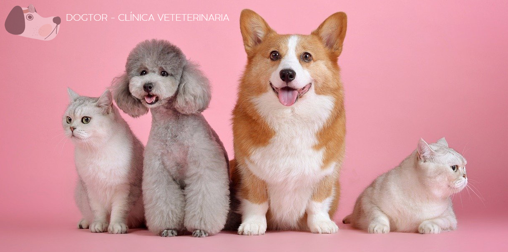

<p>home works!</p>
<!--IMAGEN PRINCIPAL-->
<div class="contenedor-img">
    
</div>

<!--ENLACES CON ICONOS-->
<div class="enlaces row ">
    <div class="col-lg-4 col-md-12 col-sm-12">
    <a  href="https://www.fundacion-affinity.org/perros-gatos-y-personas/tengo-un-animal-de-compania/cuidados-basicos-de-tu-animal-de-compania" target="_blanck">
        
        <p class="">Cuidado de tu mascota</p>
    </a></div>
    <div class="col-lg-4 col-md-12 col-sm-12">
    <a  href="https://www.lookcan.es/" target="_blanck">
        
        <p class="">Peluquería Canina</p>
    </a></div>
    <div class="col-lg-4 col-md-12 col-sm-12">
    <a  href="https://www.santevet.es/articulo/vacunas-del-perro?gclid=Cj0KCQiA9OiPBhCOARIsAI0y71DeQ4Ox32Inq39G7mM1FYSS-CBqGSONFvLXl4eZb7tY4WUVfqe76PcaApM5EALw_wcB" target="_blanck">
        
        <p class="">Vacunas para tu mascota</p>
    </a></div>
</div>

<!--CARRUSEL-->
<!--Carousel-->
<div id="carrusel" class="carousel slide" data-bs-ride="carousel" data-bs-interval="3000">
    <!--Botones que indica en que slide estamos y nos permite navegar entre ellos-->
    <div class="carousel-indicators">
      <button type="button" data-bs-target="#carousel" data-bs-slide-to="0" class="active" aria-current="true" aria-label="Slide 1"></button>
      <button type="button" data-bs-target="#carousel" data-bs-slide-to="1" aria-label="Slide 2"></button>
    </div>
    
    <!--Items del carousel donde introducir las imagenes de las ultimas tres noticias de la base de datos.-->
    <div class="carousel-inner">
      <div class="carousel-item active" >
        
      </div>
      <div class="carousel-item">
        
      </div>
    </div>
    <!--Botones para desplazarse entre los slide hacia delante y hacia atras-->
    <button class="carousel-control-prev" type="button" data-bs-target="#carousel" data-bs-slide="prev">
      <span class="carousel-control-prev-icon" aria-hidden="true"></span>
    </button>
    <button class="carousel-control-next" type="button" data-bs-target="#carousel" data-bs-slide="next">
      <span class="carousel-control-next-icon" aria-hidden="true"></span>
    </button>
  </div>
